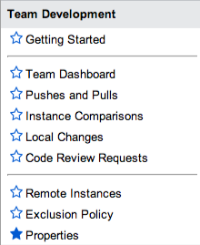

Team Development
| |
Note: This article applies to Fuji. For more current information, see Team Development at http://docs.servicenow.com
The ServiceNow Wiki is no longer being updated. Please refer to http://docs.servicenow.com for the latest product documentation. |
1 Overview
Team development is a version control system similar to Git. It supports parallel development on multiple, sub-production ServiceNow instances by providing:
- Branching operations, including pushing and pulling record versions between instances.
- The ability to compare a development instance to other development instances.
- A central dashboard for all team development activities.
This feature is active by default starting with the Dublin release.
2 When to Use Team Development and When to Use Another Deployment Option
| Deployment option | Good for | Future considerations | ||
|---|---|---|---|---|
| Team Development |
|
| ||
| Update Sets |
|
| ||
| Application Repository |
|
|
3 Team Development Concepts
3.1 Instance Hierarchies
Team development allows you to set up a distributed version control system between two or more ServiceNow instances where each instance acts as a source repository, or branch. Developers use separate instances to work on different features, applications, or product releases at the same time. With team development, developers can share code between these instances and resolve collisions throughout the development process.
Team development allows you to establish hierarchical relationships between instances and provides a mechanism for transferring changes between instances that integrates with the update set process where necessary. In a team development instance hierarchy, each sub-production instance has a parent instance. Instances that have the same parent instance are peer instances. The shared parent instance becomes the central hub, or repository, and all peer instances synchronize to it.
3.2 Pulls and Pushes
Developers synchronize their instances to the parent instance by pulling and pushing versions of customized records and resolving collisions between versions on the parent instance and the development instance. Developers can also compare peer instances to one another and share code or resolve collisions before pushing versions to the parent instance.
Pulling from the parent retrieves versions of records that have customer updates. Pulling retrieves all versions that have not already been pulled onto the development instance, including historical versions, and you cannot choose which versions to pull. You must resolve any collisions before proceeding with further pulls or pushes.
Pushing to the parent adds only the current development version to the parent, not all the development versions. You can choose which changes to push to the parent. Pushing creates a local update set on the parent that is marked as complete. Pushed versions are also tracked as local changes on the parent. Therefore, you can promote changes through your development and test hierarchy by transferring the update set or by pushing the local changes.
Comparing reports the differences between two peer instances. You can choose which versions to pull from a peer instance.
3.3 Versions and Local Changes
Version records track changes to a customizable record over time so that you can compare or revert to a specific version later. A version record is created every time a developer changes a customizable record, so a single record can have multiple version records associated with it.
Local change records track which customized records have changes on the development instance that are not on the parent instance so that you can collect changes in preparation for a push. A local change record is created or updated to reference the current version every time a developer modifies a customizable record, so a single record can have only one local change record associated with it.
{kind=link}
3.3.1 Back Out Local Changes
Developers can back out a local change to restore a previous version of a customizable record. The back out action sets the local customizable record to the last revision identified by a reconciliation action. See Backing Out Local Changes. This feature is available starting with the Eureka release.
3.3.2 Change Tracking
The Pushes and Pulls related list on the team dashboard displays the user who created a change and the remote instance where the change was created, available starting with the Eureka release. In versions prior to Eureka, the team dashboard displays all changes as coming from the system user. The change list does not include the remote instance where the change came from.
3.4 Exclusion Policies
You can exclude certain files from change tracking by creating an exclusion policy. When a change matches an exclusion policy, the change does not generate records in the local changes list. The change still generates local version records and update set records as normal. See Creating an Exclusion Policy. Exclusion policies are available starting with the Eureka release.
| |
Note: The exclusion policy applies to changes identified during a reconciliation operation. If you create an exclusion policy after a reconciliation, team development still tracks the changes until the next reconciliation. |
3.5 Code Review
Team development administrators can require that pushes undergo code review before accepting them. When code review is enabled, pushing a change to the parent instance triggers the code review workflow. By default, users with the the teamdev_code_reviewer role receive notifications to review changes and can approve or reject changes. The Team Development Code Reviewers group has the teamdev_code_reviewer role.
For each change, reviewers can see the following information.
- What remote instance the pushed change comes from
- Who pushed the change to the parent.
- What the change is called.
- When the change was created.
- What versions the change includes.
Reviewers must approve or reject a push from the Team Development application.
While changes are being reviewed on the parent instance, a child instance cannot do the following activities involving the parent instance:
- Push changes to the parent instance.
- Pull changes from the parent instance.
- Reconcile changes with the parent instance.
- Change the parent instance to another instance.
- Delete the parent instance's remote instance record.
The option to require code review is available starting with the Eureka release.
3.5.1 Code Review Workflow
The Team Development Code Review workflow manages how changes are pushed to the parent. By default this workflow:
- Starts when changes are pushed to the parent instance.
- Verifies the code review property is active on the parent instance.
- Sets the stage of changes requiring approval to Awaiting Code Review.
- Notifies the Team Development Code Reviewers group to review pushed changes, if configured.
- Loads approved changes or sets the stage to Code Changes Rejected.
{kind=link}
| |
Warning: Use caution when modifying this workflow, as the code review feature may not function properly. |
3.5.2 Notifications
You must enable email notifications on the instance requiring code review for that instance to send code review notifications. See Configuring Email. The Team Development Code Review workflow sends notifications to members of the Team Development Code Reviewers group when:
- A push requires code review.
- A user cancels a push.
If the user who pushed the changes has a user record with an email address on the instance where code review was required, the user receives a notification when the approval stage is set to Complete (approved) or Code Changes Rejected.
The code review notifications contain the following information:
| Notification Name | Table | Contents |
|---|---|---|
| Code review update for developer | Push or Pull [sys_sync_history] |
|
| Notify code reviewer of cancelled review | Push or Pull [sys_sync_history] |
|
4 Team Development Process
| |
Warning: Do not use Team Development with production or test instances.
When you back out a change on a Team Development instance, it backs out the change all the way back down the chain, including undoing the work on the source instance. This behavior can cause major problems on test and production instances. |
Follow this basic process to use team development:
- Set up the development instance hierarchy.
- Provision development instances on the same software version as the target instance. For example, use the software version that is running on your production instance.
- [Recommended] Clone the target to the development instances.
- For each instance, define the parent instance.
- [Optional] For each instance, define the peer instances.
- For each instance, pull all changes from the parent instance.
- For sub-development instances, grant access rights to appropriate developers.
- Develop customizations on sub-development instances. Use the team dashboard to track development activities.
- Pull versions from the parent instance, such as versions that were pushed from other sub-development instances. Reconcile any conflicts with the current local version, as necessary.
- Track local changes. Queue changes that are ready to push to the parent development instance.
- Compare versions on peer instances. Reconcile any conflicts.
- When a feature is ready to promote to the parent development instance, push the current version of the customized records.
- [Optional] Have code reviewers approve or reject the pushed version.
- Test and promote the feature into production according to your testing and release management process.
5 Roles
To use team development, developers must have admin access to their development instance. To allow pushes to the parent instance, a remote instance connection must be defined with a user account that has admin access to the parent instance.
To limit developer access to the parent instance, see Granting Access Rights to Developers.
To use code review features, users must have the teamdev_code_reviewer role. See Code Review.
6 Menus and Modules
To access team development features, use these modules under the Team Development menu.
|  |
|
{kind=link}
7 Enhancements
7.1 Fuji
- Developers can back out completed pushes, committed remote update sets, and completed local update sets.
- The local changes list shows only the latest version for a workflow.
7.2 Eureka
- Allows team developers to back out local changes they do not want to keep.
- Allows team development administrators to view change tracking information about the user who submitted a change and the remote instance it came from.
- Allows team development administrators to create exclusion policies to prevent an instance from tracking changes to particular records.
- Allows team development administrators to require code review of all changes pushed to an instance.
- Allows team development administrators to specify whether a remote instance is active.
- Requires a remote instance to be on the same major version in order to be selected as a parent instance.
- Allows team development operations to be completed by non-administrators.
- Allows developers to receive notifications for team development events.